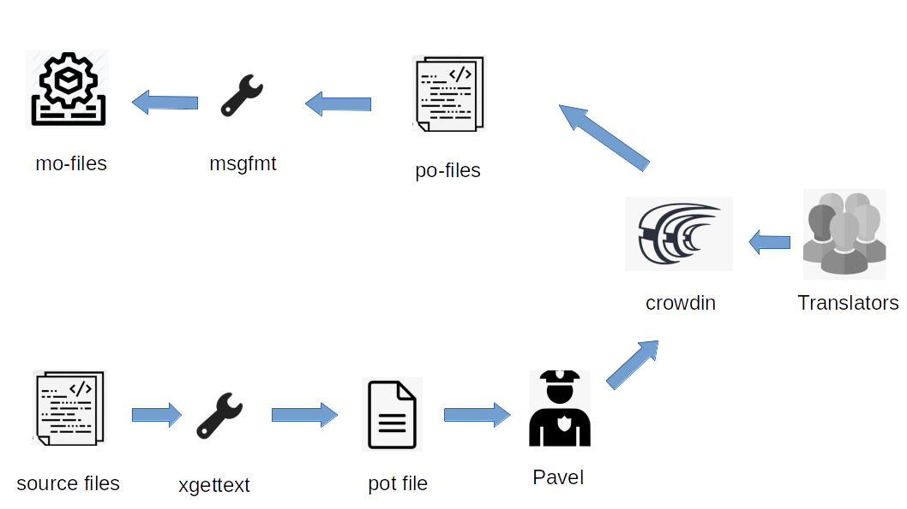

Internationalization (i18n)
Summary
Maintainers basic message: we need a heads-up from plugin developer when there is a need for translations. If we just get this, we are able to assist in the complete process.
The process:
-
Plugin developer determines when to advise maintainers when there are going to be no more new strings so that a *.POT file can be developed.
-
Maintainers develop the [plugin].pot file and post it to Crowdin announcing a deadline by which language updates must be ready.
-
Maintainers make a Pull Request to the plugin developer with the completed language *.PO files.
-
Plugin developer merges the Pull Request which makes the languages available when the plugin is built the next time.
The i18n maintainers
The i18n workflows are maintained by a group which has the necessary skills and Crowdin privileges. Currently this is Pavel (@nohal), Hakan (@hakansv) and Dave (@bdbcat).
The maintainers supports plugin developers in all stages from creating the pot-file to adding the translated po-files to the project
Overview
The OpenCPN plugins shares the i18n infrastructure with the main opencpn program. In particular, plugins are subprojects in the main opencpn project at Crowdin.
The workflow is based on the gettext tools and the
Crowdin translation web service.
In the end this converts all strings like _(some string) to translated
content in runtime, content which is taken from machine-dependent,
binary mo-files.
The workflow: 
-
The source files' translatable strings are marked using the `_()`macro.
-
Using the xgettext tool, the translatable strings are extracted to a pot file.
-
The pot file is sent to the i18n maintainers who submits it to the crowdin web translation service. Here, each plugin is a sub-project under the opencpn project.
-
Translators translates the pot file to all sorts of languages using the Crowdin web service, as exemplified here.
-
A note in the i18n thread from translator when she is completed is appreciated.
-
The maintainers downloads the translated po files to and makes a PR against the plugin
-
The plugin developer merges the PR which updates the po translations.
-
During the build process, each po-file is compiled to a mo-file. These are the files used in runtime to provide translations.
Notes
- "Items" and "Texts" rule
-
1 Item in the language file 1 = Display text. Of course, this requires you to put more items in this file, but this is the only way for each translator to take account of the peculiarities of its language.
Currently, all the other plugins and the heart of OpenCPN follow this rule and we can always translate very correctly.
- Translation priority between core and plugin
-
I have a question about translation priority between core and plugins, ….How can this be dealt with?
It depends. Many plugins loads translations from both core and and the plugin. This is the scenario when no specific steps are taken to avoid it. In this case, if both the plugin and main OpenCPN translates the same item, the main program wins and the plugin translation is unused.
The upside is that the plugin can re-use common translations from the main program.
To avoid translation conflicts, plugin developers must ensure that the items they use are different from those of the core. It is not necessary that the difference is big, one different character is enough.
Plugins can be configured to just use translations from the plugin, avoiding the overlap with the main program. See the plugin templates page.